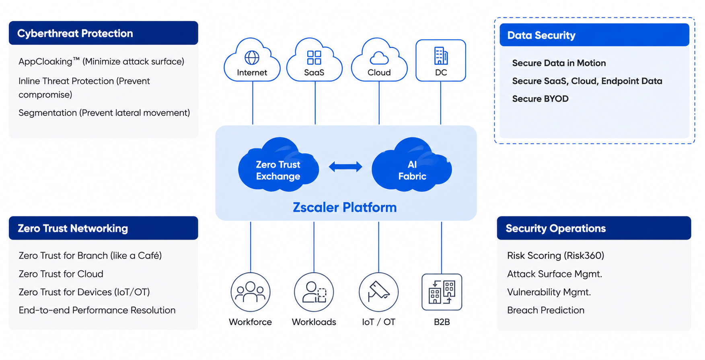
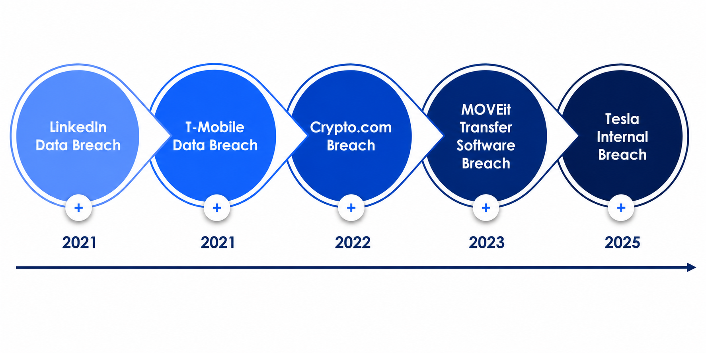
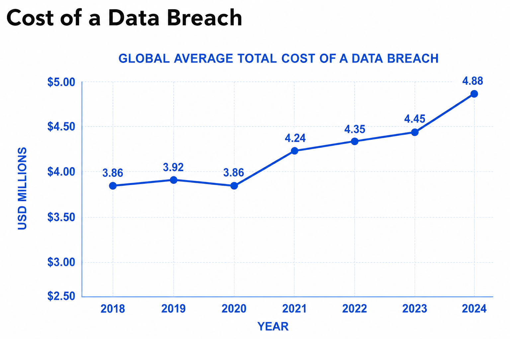
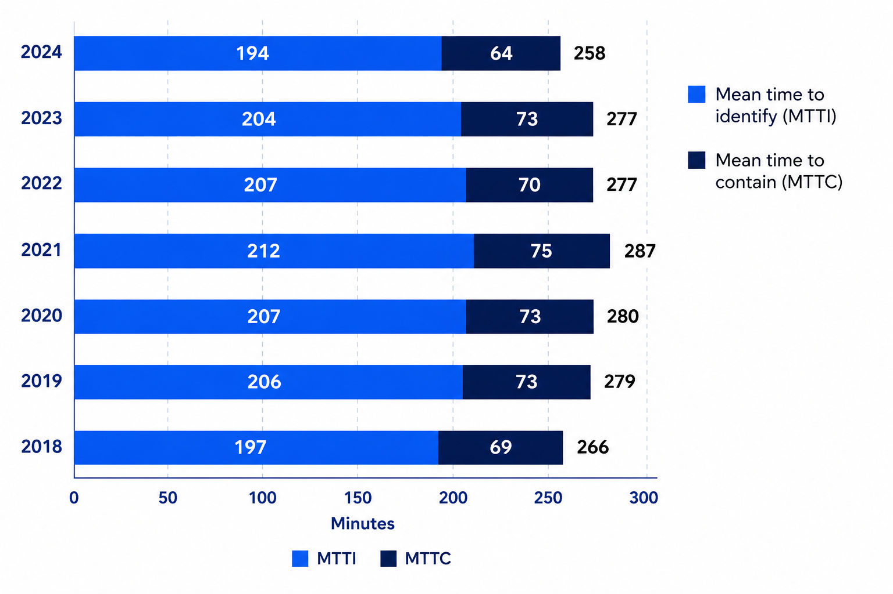
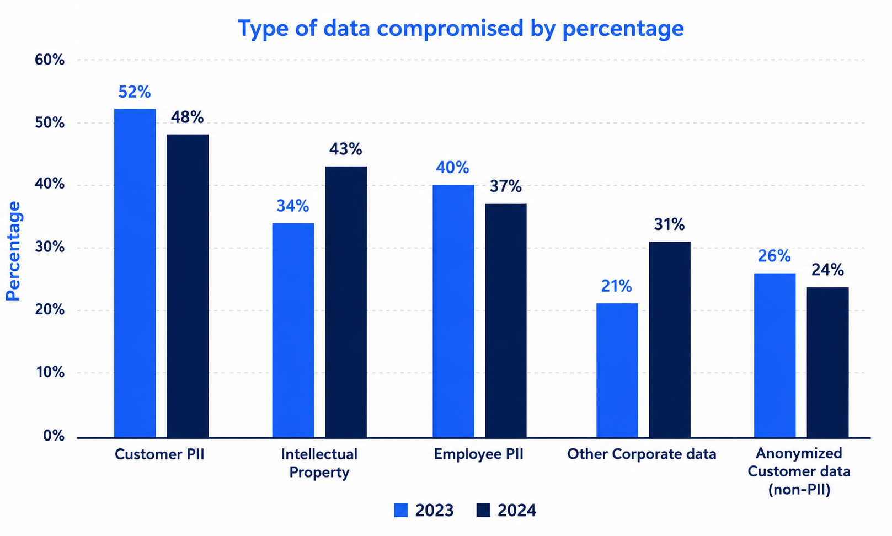
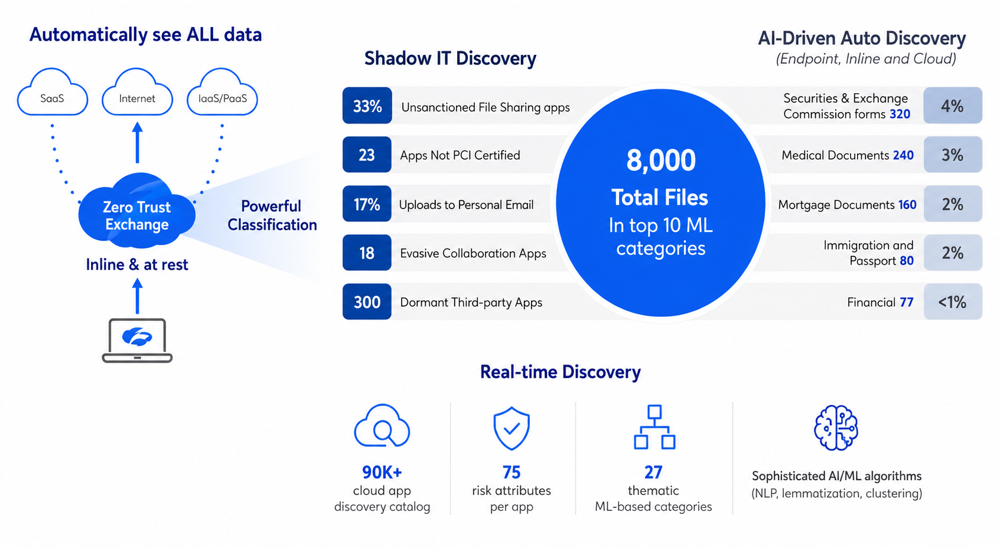

Study Guide — Introduction to Data Security · EDU-220
Introduction to Data Security
Why data security matters, the real cost of breaches, and how Zscaler's unified platform protects data across every channel.
Data Security is essential to protect privacy and maintain trust.
Traditional tools were built for a different world. As data spreads across SaaS, cloud, endpoints, and BYOD devices, organisations need a unified approach — not a patchwork of disconnected controls.
💭THINK FIRST · WHY DATA SECURITY
Every click, login, and document creates data exhaust — most of it sensitive in some way. The cloud-first world hasn't just moved this data; it has scattered it across SaaS, public clouds, contractor laptops, and personal phones. Traditional perimeter tools were built for a world where data sat still.
If you mapped every place your organisation's data lives right now, how many destinations could you actually name?
What kinds of data do you handle daily without ever thinking of it as "sensitive"?
When the perimeter dissolves, what does "protecting" data even mean anymore?
Q1 — MODEL ANSWER
In practice, most teams can name only the official sanctioned apps — usually a dozen or so. The real footprint is multiples larger: forgotten S3 buckets, contractor laptops, file-sharing links shared once and never revoked, third-party SaaS connectors, AI chat sessions. The gap between the apps you can list and the destinations data actually reaches is exactly the visibility deficit data security is built to close.
Q2 — MODEL ANSWER
Calendar invites contain travel and schedule details an attacker can weaponise; Slack messages contain credentials, decisions, and internal language used in social engineering; meeting transcripts contain strategy. None of this looks like "sensitive data" in a traditional DLP rule because it has no SSN pattern, but in aggregate it forms a profile of the business that is enormously valuable to attackers and to competitors.
Q3 — MODEL ANSWER
Protection shifts from defending a location to defending the data itself wherever it travels — data-centric, not perimeter-centric. That means identity-aware access, inline inspection of the channels data moves through, classification that travels with the file, and continuous monitoring rather than a one-time gate. The wall is gone; the responsibility is to know what the data is and enforce policy at every hop.
WHY IT MATTERS
Data Security in a cloud-first world
In today's digital landscape, the rapid adoption of SaaS and public cloud services has reshaped enterprise operations. Traditional security tools often fall short in protecting distributed cloud data, leaving organisations vulnerable to user errors and malicious threats.
Core principle: Data Security is essential to protect privacy and maintain trust in a digital world. Without a consistent security layer across every channel, sensitive data will find a way out.
Zscaler addresses these challenges with a comprehensive data security solution that protects data at rest, in motion, across cloud environments, and on unmanaged and BYOD devices — ensuring compliance across the enterprise.

Zscaler Zero Trust Exchange — unified data protection across Cyberthreat Protection, Data Security, Zero Trust Networking, and Security Operations
Course Overview
This course is organised into three sections:
Zscaler Data Security Overview — Current state of data security, how Zscaler addresses it, and AI-driven data identification and classification.
Advanced Data Security Services Suite — Advanced features that protect data across multiple channels including data in motion, cloud environments, and BYOD devices.
Incident Management Capabilities — Incident handling through role assignments, administrative tasks, and Zscaler Workflow Automation for efficient incident response.
Learning Outcomes
By the end of this course, you'll be able to:
Identify the need for a modern approach to data security
Explain how Zscaler provides data security using the Zero Trust Exchange framework
Identify Zscaler's AI-driven auto data discovery and classification capabilities
Configure Zscaler Data Security policies to meet organisational requirements
Leverage Zscaler Workflow Automation for efficient incident handling
Analogy
Data is the new oil — but unlike oil, it doesn't sit in one tanker. It seeps through pipelines made of SaaS apps, cloud buckets, email threads, and BYOD phones. Bolting a single padlock on the refinery door no longer works when the pipeline runs through everyone's pocket.
🧠
MENTAL NOTE
Modern data security must protect data at rest, in motion, in cloud, and on unmanaged/BYOD devices — a unified layer across every channel, not a stack of disconnected tools.
Image Placeholder
Generate: flat blue minimalist illustration of scattered data nodes — laptops, phones, cloud icons, SaaS app tiles — connected by glowing thin lines forming a single protective ring around them, no text labels
ASK A QUESTION
MY NOTES
💭THINK FIRST · BREACH PATTERNS
Five years of major breaches reveal a pattern: the attackers don't all look alike. Some are foreign criminal gangs scraping public APIs, some exploit a single vulnerable file-transfer tool, and some are trusted employees walking out the front door. The vector keeps changing — the data keeps leaking.
If LinkedIn, T-Mobile, and Tesla each leaked through a different mechanism, what does that say about defending with a single tool?
Why did two-factor authentication fail to prevent the Crypto.com loss — and what does that imply about "checkbox security"?
Which is harder to detect: a hacker probing the perimeter, or a Tesla employee with legitimate access copying a file?
Q1 — MODEL ANSWER
It says a single tool will always be blind to the next vector. LinkedIn lost data through public-facing scraping, T-Mobile through API abuse and exposed endpoints, Tesla through trusted insiders walking out. No DLP, no CASB, no insider-threat tool covers all three. The lesson is layered, channel-aware defence — and a platform stance that can reason about identity, content, and behaviour together — not a best-of-breed shopping list.
Q2 — MODEL ANSWER
2FA prevents credential reuse; it does not prevent a session hijack, an authenticated insider, or a compromised authenticated endpoint. Crypto.com's loss happened despite 2FA because the attack worked around the factor, not through it. Checkbox security treats controls as compliance line items rather than threat-specific defences — once you mark "2FA: yes," the assumption is "account takeover: solved." It is not.
Q3 — MODEL ANSWER
The insider. A perimeter probe is noisy — failed logins, scanning patterns, anomalous traffic — and triggers signature- and rate-based detections. A trusted employee using legitimate credentials to copy a file they have legitimate access to looks like normal work. Detecting that requires behavioural baselining, peer comparisons, and DLP on egress channels — far harder, far quieter, and far more common in real breach data.
BREACH TIMELINE
Major data breaches: 2021 – 2025
Over the years, numerous high-profile data breaches have underscored the critical need for robust data security measures to protect sensitive information and maintain organisational trust.
2021
LinkedIn Data Breach
Data from 700 million users was scraped and posted online, exposing names, email addresses, phone numbers, and professional details.
2021
T-Mobile Data Breach
Personal data of over 50 million customers was stolen — including Social Security numbers, names, addresses, dates of birth, and driver's licence numbers — raising major concerns about identity theft.
2022
Crypto.com Breach
Hackers stole an estimated $35 million worth of cryptocurrency from 483 customer accounts despite Crypto.com's use of two-factor authentication — exposing vulnerabilities in even well-known digital financial platforms.
2023
MOVEit Transfer Software Breach
A critical vulnerability in the MOVEit file-transfer software compromised sensitive data for millions of people and organisations worldwide.
2025
Tesla Internal Breach
Internal whistleblowers at Tesla leaked private data belonging to over 75,000 employees, including Social Security numbers, wages, and personal details. Tesla confirmed that insider misconduct — rather than external hacking — caused the breach.

Major breach timeline 2021–2025: LinkedIn → T-Mobile → Crypto.com → MOVEit Transfer → Tesla Internal
!
KEY OBSERVATION
Breaches come from multiple vectors — external hackers, software vulnerabilities, and malicious insiders. No single control layer is sufficient. The Tesla breach in particular highlights that insider threats are just as dangerous as external attacks.
Analogy
A breach timeline is like a weather log of broken levees. One year, the flood comes over the top (LinkedIn scraping). Another, a hidden crack spreads through the wall (MOVEit). The next, the gatekeeper himself opens the gate (Tesla insider). You don't defend a city against floods by patching only the spot the last one came through.
🧠
MENTAL NOTE
2021–2025 breaches span scraping, vendor vulnerabilities, weak MFA, and insider misconduct. Insider threats are as severe as external attacks — defence must be multi-vector and multi-channel.
ASK A QUESTION
MY NOTES
💭THINK FIRST · COUNTING THE DAMAGE
$4.88 million is just the average — the headline number. Behind it sits 258 days of unnoticed intrusion, lost customers, regulatory fines, and the silent cost of staff burnout. The slow burn matters as much as the spark.
If a breach is sitting undetected in your environment for 194 days, what does that say about how much you actually see?
Why is Employee PII the costliest record type when Customer PII is the most commonly stolen?
What gets paid for in that $4.88M number that you'd never see on a security budget line?
Q1 — MODEL ANSWER
194 days is more than six months of unobserved attacker dwell — enough time to map the environment, identify crown jewels, establish persistence, and exfiltrate in stages too small to alarm anyone. It means your detection coverage is essentially incidental rather than systematic, and that the controls in place are catching only the loudest, sloppiest attacks. By the time you find the breach, the attacker has already done what they came to do.
Q2 — MODEL ANSWER
Customer PII is stolen more often because customer datasets are larger and externally exposed — attackers scrape what is in front of them. Employee PII is costlier per record because it usually includes deeper, more correlated data: salary, SSN, banking details, performance records, dependent information. The combination enables identity theft, tax fraud, and targeted social engineering, and the regulatory liability per record is heavier.
Q3 — MODEL ANSWER
Regulatory fines, legal counsel, forensic investigators, customer notification mailings and call-centre surges, credit-monitoring offers, lost deals and churned customers, executive time, PR firms, and the morale tax that drives staff turnover. None of these show up on the firewall renewal line, but they dominate the total — which is why "we spent $X on prevention" rarely captures the actual avoided loss.
COST & IMPACT
The rising cost of a data breach
Data breaches are becoming more costly and harder to manage. With security teams struggling to fill skill gaps, the global average cost of a breach has jumped 10% in a year, reaching USD 4.88 million in 2024. Business disruptions and post-breach fixes are driving these costs higher.

Global average total cost of a data breach (USD millions) 2018–2024 — up 10% to $4.88M in 2024
$4.88M
USD — 2024
Global average total cost of a data breach — up 10% year on year
258
DAYS — 2024
Mean time to identify and contain a breach (194 days to identify + 64 to contain)
$169M
GLOBAL AVG
Average cost across all stolen record types — Employee PII is the costliest
Time to Identify and Contain
The average time to identify and contain a breach now stands at 258 days, showing some progress compared to 277 days the previous year. Yet this timeline remains long enough to cause significant damage to affected organisations, emphasising the need for stronger preventive measures and faster response strategies.

Mean time to identify (MTTI) + mean time to contain (MTTC) by year — 258 total days in 2024 (194 MTTI + 64 MTTC)
Types of Data at Risk
Customer Personally Identifiable Information (PII) was the most commonly breached data type in 2024, accounting for 48% of all incidents. This includes sensitive data such as tax ID numbers, emails, and home addresses.

Types of data compromised by percentage (2023 vs 2024) — Customer PII most common at 48%, Employee PII costliest
Data Type
2023 %
2024 %
Risk Level
Customer PII
52%
48%
HIGH
Intellectual Property
34%
43%
HIGH
Employee PII
40%
37%
COSTLIEST
Other Corporate Data
21%
31%
MEDIUM
Anonymised Customer Data (non-PII)
26%
24%
MEDIUM
Analogy
A breach is less like a robbery and more like a slow leak in a sinking ship. By the time you hear the water (258 days later), the cargo is ruined, the crew is exhausted, and the auditors are at the dock with clipboards. The visible damage is just the tip — what you don't see in the hold costs the most.
🧠
MENTAL NOTE
2024 averages: $4.88M cost per breach (up 10% YoY), 258 days to identify + contain (194 MTTI + 64 MTTC). Customer PII = most common (48%); Employee PII = costliest.
Image Placeholder
Generate: flat blue minimalist illustration of an iceberg with a small visible tip above a waterline and a vast submerged mass below, divided into stacked layers representing hidden costs — no text labels
ASK A QUESTION
MY NOTES
💭THINK FIRST · ONE PLATFORM VS MANY
Most organisations didn't choose tool sprawl — they grew into it. A DLP for email, a CASB for SaaS, an agent for endpoints, a posture tool for AWS. Each one was the right answer to yesterday's question. Together, they leave seams that data slips through.
If you updated a single DLP rule today, how many separate consoles would you need to touch to make it stick everywhere?
What gets lost when each channel has its own policy engine and its own definition of "sensitive"?
Why is Browser Isolation a cleaner answer for BYOD than shipping a VDI image to a contractor's personal laptop?
Q1 — MODEL ANSWER
In a tool-sprawl environment, a single policy change ripples across five or more consoles — email DLP, web DLP, CASB, endpoint DLP, cloud security posture, possibly an SaaS-specific tool, plus identity. Each console has its own syntax, its own update cycle, and its own approval workflow. The lag between consoles is where inconsistencies live, and inconsistencies are where data leaks.
Q2 — MODEL ANSWER
When each channel owns its own definitions, "sensitive" means different things in different places. A document classified Confidential in email DLP may be unclassified in the CASB and ignored entirely on endpoints. Worse, evidence and incident data are fragmented across consoles, making investigation slow and error-prone. The unified platform answer is one classification model, one policy engine, one audit trail — applied at every channel.
Q3 — MODEL ANSWER
Browser Isolation renders the application in a remote browser and streams only pixels to the contractor's device. Data never touches the endpoint, so there is nothing on the personal laptop to secure, image, or wipe. VDI by contrast still ships a full image to a managed runtime, requiring agents, licences, and trust in the underlying device. Isolation gives the contractor access without giving the laptop responsibility.
ZSCALER'S APPROACH
A unified data security platform
Traditional data security relies on multiple disconnected tools — each handling a specific application silo. Updating a single policy often requires changes across multiple systems, creating complexity, inconsistency, and coverage gaps.
Zscaler simplifies this by unifying all channels on a single platform within the Zero Trust Exchange, handling inline DLP, CASB for SaaS applications, and cloud security posture management from one consistent policy engine.
🔒
Inline DLP
Stops data from leaving the organisation across all web and cloud traffic — a single DLP policy engine for SaaS, cloud, and internet access.
☁️
DSPM
Data Security Posture Management secures dynamic data in public clouds (AWS, Azure) — identifies sensitive data, recognises misconfigurations, and prioritises remediation.
💻
Endpoint DLP
Actively monitors and controls data activity on user devices — protects against data loss via USB, print, and network sharing. Extends DLP policy to end-user activities.
📱
Browser Isolation (BYOD)
Secures data access for unmanaged devices and BYOD — partners, contractors, and remote workers — without data landing on the device. Eliminates the need for costly VDI solutions.
★
THE UNIFIED ADVANTAGE
This unified platform — part of the Zscaler Zero Trust Exchange — offers AI-driven data visibility and workflow automation. It quickly identifies data risks, triages incidents, and trains users, ensuring comprehensive data protection across motion, rest, cloud, endpoints, and BYOD from a single pane of glass.
Why Traditional Tools Fall Short
The top reasons breaches occur include targeted attacks, data theft by bots, accidental internet exposure, and malicious insiders. Insider threats are particularly hard to detect because they occur through normal-looking activity — emails, apps, and routine file access. Data travels across many places, and security teams often don't have a clear view of the full picture with siloed tools.
Analogy
A patchwork of disconnected security tools is like guarding a house with five different locksmiths — one for the front door, one for the back, one for windows, one for the garage, and one for the mailbox. Each does fine work, but no one is watching the whole house. Zscaler's unified platform is the single security system that sees every door, window, and vent at once.
🧠
MENTAL NOTE
Zscaler unifies Inline DLP, DSPM, Endpoint DLP, and Browser Isolation (BYOD) on the Zero Trust Exchange — one policy engine across motion, rest, cloud, endpoints, and unmanaged devices.
ASK A QUESTION
MY NOTES
💭THINK FIRST · YOU CAN'T PROTECT WHAT YOU CAN'T SEE
Before you can protect data, you have to find it — and most organisations can't. Sensitive files end up in Shadow IT apps, forgotten cloud buckets, and personal drives. Manual tagging never keeps up with the velocity of modern work. AI changes that arithmetic.
How many sanctioned apps does your organisation officially have — and how many are employees actually using?
If a resume, a tax form, and a contract all land in the same SaaS folder this afternoon, who tags them — and how soon?
What does AI-driven discovery do that human classification can't, and where does it still need a human in the loop?
Q1 — MODEL ANSWER
Most organisations sanction perhaps 20-40 apps and discover their employees actually use hundreds — including unofficial Slack workspaces, personal Dropbox accounts, browser-based AI tools, and SaaS adopted department-by-department without IT review. The gap is the definition of Shadow IT. Without measurement (a CASB or discovery tool), the gap is invisible; with it, the typical first scan returns numbers that shock the security team.
Q2 — MODEL ANSWER
In most environments, no one — until a DLP scan or an AI classifier processes the folder later. That latency window is where data leakage happens: a resume sent to an external recruiter, a contract emailed to the wrong party, tax forms shared too broadly. Inline classification at upload time is the difference between catching the mistake in seconds versus discovering it during an annual audit.
Q3 — MODEL ANSWER
AI-driven discovery scales — millions of documents, dozens of formats, multiple languages, with semantic understanding that catches sensitive content even when it lacks obvious markers. Humans cannot match that throughput. But humans still own policy questions (what counts as sensitive in this business context?), exception handling, and reviewing low-confidence AI classifications. Discovery automates the volume; humans tune the judgment.
AI DISCOVERY & CLASSIFICATION
AI-driven Auto Data Discovery and Classification
To protect data across various channels, accurate identification and classification are essential. Zscaler's AI-powered data discovery and classification capabilities automate the identification of sensitive data — both inline and at rest — enabling accurate classification and stronger data protection across all environments.
Scale: Zscaler's AI discovery has identified over 8,000 total files across 10+ categories, including Financial, Legal, and Resume data — surfaced automatically without manual tagging effort.

Zscaler AI-driven auto data discovery — Shadow IT, AI Auto Discovery, and Real-time Discovery across 8,000+ files in 10+ categories
FEATURE 1
Shadow IT Discovery
Automatically surfaces unsanctioned cloud applications employees are using, identifying data exposure risks from tools that have never been reviewed by security or governance teams.
FEATURE 2
AI-Driven Auto Discovery
Uses AI to automatically discover and classify sensitive data across your environment — no manual tagging required. Identifies sensitive file types, access patterns, and risk categories across all storage: cloud, email, and endpoint.
FEATURE 3
Real-time Discovery
Identifies sensitive data as it moves in real time, enabling immediate policy enforcement. Detects insider threats by analysing data access patterns and flagging anomalous behaviour.
Endpoint & Cloud Visibility
At the device level, AI-powered endpoint discovery provides a detailed view of data distribution by storage type — including storage buckets, virtual machines, emails, and popular file-sharing apps. This gives security teams a complete picture of where sensitive data lives and how it is being accessed.
The Top Data Securities report gives organisations visibility across different departments, helping identify which teams carry the most data risk so governance efforts can be prioritised.
★
EXAM POINT
The key advantage of AI-powered data discovery tools is that they automate the detection and classification of sensitive data. They do not replace human oversight, restrict all sharing, or eliminate the need for cybersecurity policies.
Knowledge Check
What is a key advantage of using AI-powered data discovery tools in organisations?
✕
They completely replace human oversight in data security
✓
They automate the detection and classification of sensitive data
✕
They restrict all external sharing of organisational data
✕
They eliminate the need for cybersecurity policies
Analogy
Manual data classification is like trying to label every drop in a river with a sticker as it flows past. AI-driven discovery is the sonar that sees the whole current at once — what's flowing, where it's going, and which currents are carrying the dangerous cargo.
🧠
MENTAL NOTE
Zscaler's AI discovery automates detection and classification — Shadow IT, AI Auto Discovery, and Real-time Discovery across 8,000+ files in 10+ categories. It augments human oversight; it does not replace policy or governance.